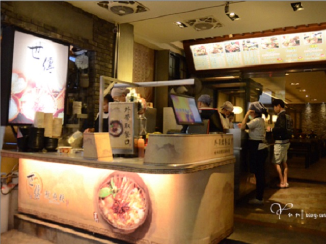
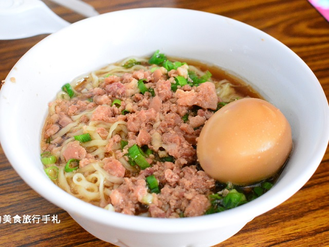

草屯-世傳羊肉羹
本特色:位於草屯形象商圈內人很多，店面蠻乾淨的，魷魚羹麵還蠻好吃的，可以便點個酸梅湯喝喝(中興新村名產)價位100初

草屯-京すし手作割烹
本店特色:人很多但坐位少,運氣不好有機會等很久，本人不常吃日式料理,但蓋飯不錯，生魚片滿多人點的,因為哇沙米是現磨的，價位200~300

中興-布朗司手製烘焙屋
本店特色：很優閒的一家店，本人常吃的早餐店，三明治有30 35 45等很划算，其他套餐覺得太貴只試過一次，不過很多外地遊客都點套餐，看起來也不錯吃
中興-梅園餡餅粥
本店特色:周末人超級多，像請客一樣,但翻桌率很高，個人不愛刀削麵，都點蒸餃和餡餅，價位100初
南投-友德意麵
本店特色：道地的南投意麵,基本上南投市場附近很多,這家是有名的比較貴但也很好吃,本人會挑附近便宜吃,喜歡也可以在市場買沒煮的回家煮

南投-江城北方麵食館
本店特色：本人推測，中興新村和南投很多外省人，所以麵食館也很多，這佳算最近整修完，所以看起來蠻新的，店裡的東西不便宜但很大份，適合一起吃，本人推薦蘿蔔糕與小籠湯包。